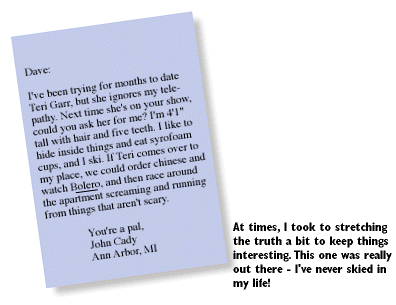
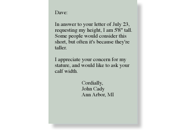

Phase II: Dave and I Are Pals
When you get to know a guy a little bit, I think you start to lose the macho male persona somewhat, and you can be yourself. By the twelfth letter, I felt that I knew Dave at least well enough to wash his car, or date his daughter. Therefore, I began to loosen up.Although I had never called him "Mr. Letterman sir", I decided to stop doing that. I opted instead for the simpler "Dave" or "Dave" or "Mr. Problem Hair sir". I also made the decision at this point to let my sideburns grow in, because it looks so good on Bruce Springsteen (this had nothing to do with Dave, I was just saying).
Another change came about for me at this time. I think you can tell from my tone in the next few letters that the nervousness that had caused my sweaty palms to drop my pen and ruin several pairs of dress slacks was pretty well gone. I was no longer stuttering, and I felt more self-confident. I recall having had much the same feeling when in sixth grade, we all began wearing cups in gym. However, I do not now wear a cup. At any rate, I think Dave started feeling more comfortable with me too, or would have if I had sent him any of the previous letters.


or back to the table of contents
© 1993-1995 John Cady and the Lounge Life Press